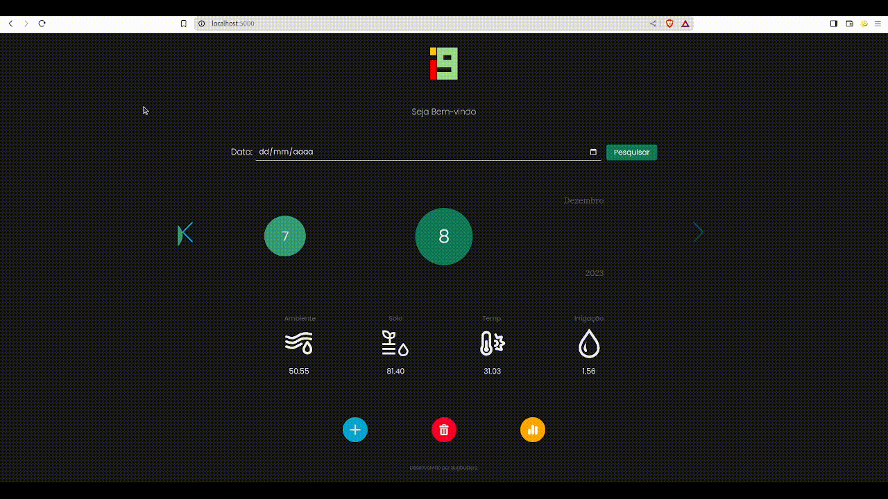
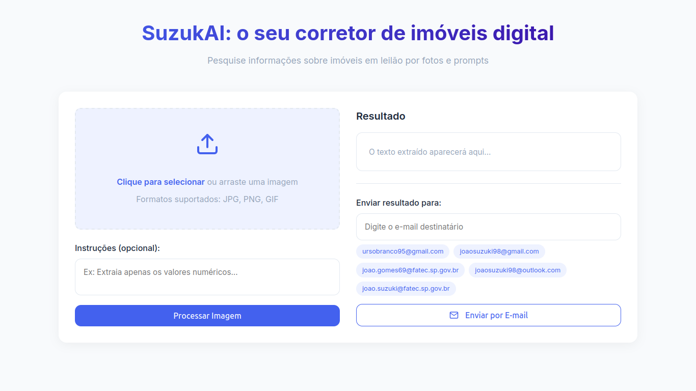
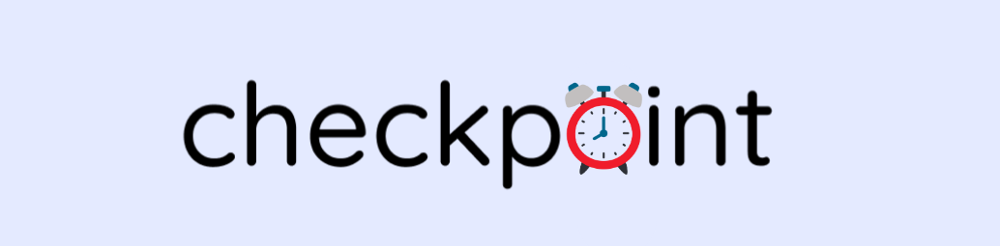

Sobre mim
Sou um estudante da FATEC SJC - Desenvolvimento de Software Multiplataforma. Estou cursando o 2º Semestre de DSM. Tenho experiências profissionais como: Mecânico, Estagiário ADM, Garçom, Balconista, Ajudante Serv. Gerais e atualmente estou procurando meu primeiro emprego na área de Desenvolvimento de Software
Nome:
Davi Miguel B. MarinhoIdade:
20 AnosFormação:
Estudante 3º SemestreTelefone:
+55 12 98708-0089Email:
dmbm.job@gmail.comEndereço:
Rua José Hamilton da Silva 530, SJC, BrasilFreelance:
DisponivelStatus:
Procurando ServiçosProjetos
API 1º Semestre - Smart Farm
2024-1: Trabalhei no projeto da API com o parceiro academico i9 Fatec, que se trata de um website para a leitura e armazenamento de dados da estufa inteligente do Project, Smart Farming, um cliente interno fornecido pelos professores da FATEC SJC, que analisa os dados sobre umidade ambiente, umidade do solo, temperatura ambiente e volume da água de sua estufa indoor.
 Link para o repositórioTecnologias usadas:
Git, Flask, HTML, CSS, JavaScript, MySQL, Figma, Jira
Contribuições pessoais
Desenvolvedor - Atuei no desenvolvimento da aplicação com foco na criação de gráficos dinâmicos, contribuí ativamente na prototipação da interface e participei da documentação do projeto. Trabalhei em conjunto com a equipe para garantir que o sistema refletisse as necessidades dos usuários de forma funcional e visualmente clara.
Hard Skills:
Flask, CSS, JavaScript, Chart.js
Soft Skills:
Durante o projeto, começei a desenvolver habilidades relacionadas às boas práticas de trabalho em equipe, aprender a colaborar de forma eficaz com outros desenvolvedores e a respeitar processos ágeis de desenvolvimento.
SuzukAI - Agente IA Corretor de Imóveis
2025-1: Trabalhei no projeto IA para conclusão da matéria "Interação Humano/Computador". Que se trata de um treinamento de um agente IA com o objetivo de ser um corretor de imóveis que iria auxiliar na compra e aluguel de imóveis, tanto por prompts quanto por anuncios/imagens de alguma imobiliária, que auxilíaria dando informações adicionais do imóvel e das redondezas como comércios, hospitais e praças.
 Link para o repositórioTecnologias usadas:
CSS, HTML, Python, Flask
Colaborações pessoais
Desenvolvedor - Desenvolvi o envio de prompts, envio de imagens, todo o sitema de envio de email com o conteudo do atendimento do agente como a imagem o prompt a extração do texto e a resposta do agente, e desenvolvi todo o front e identidade visual.
Hard Skills:
CSS, HTML, Python, Flask
Soft Skills:
Durante este projeto, aprimorei minha autonomia e habilidades de resolução de problemas, exercendo um papel de liderança na coordenação e na divisão de tarefas da equipe, o que contribuiu significativamente para o andamento eficiente das atividades.
API 2º Semestre - Inv.Sort
2024-2: Trabalhei com um parceiro acadêmico interno da Fatec, o projeto se trata de sistema de Controle e Manipulação de Produtos e Estoque, aonde poderiam ser manipulados varios tipos de itens e setores, alem de receber relatorios.
Link para o repositórioTecnologias usadas:
JavaScript, Node.js, Express, React, Prisma, Tailwind, MySQL, Figma
Colaborações pessoais
Desenvolvedor – Atuei de forma ativa no desenvolvimento do projeto, contribuindo significativamente em diversas frentes. Trabalhei na modelagem e implementação do banco de dados, participei da criação de produtos e da prototipação da aplicação, além de colaborar na organização geral do projeto. Fui responsável pela construção de tabelas, componentes de interface como botões e modais, e também ofereci suporte aos usuários.
Hard Skills:
JavaScript, Node.js, Express, React, Prisma, Tailwind, MySQL, Figma
Soft Skills:
Ao longo do projeto, enfrentei desafios relacionados à organização e à colaboração da equipe, especialmente quanto ao controle de versões e à comunicação de tarefas. Isso me levou a aprimorar significativamente minhas habilidades de trabalho em equipe, organização e proatividade, promovendo melhorias no fluxo de trabalho para evitar retrabalho. Também desenvolvi minha criatividade, tanto na resolução de problemas quanto na criação da identidade visual da aplicação.
API 3º Semestre - CheckPoint
2025-1: Trabalhei com o parceiro acadêmico NECTO SISTEM, é uma aplicação web desenvolvida para otimizar o gerenciamento de jornada de trabalho, proporcionando uma solução moderna e eficiente para o controle de ponto eletrônico. A plataforma permite registros precisos de entrada e saída, cálculo automático de horas, gestão de ausências e um painel intuitivo para análise de dados e geração de relatórios.
 Link para o repositórioTecnologias usadas:
Java, Spring Boot, React, TypeScript, MySQL, MongoDB, AWS, Tailwind, CSS, STOMP, SockJS, Axios, React, Redux, React, Router
Colaborações pessoais
Desenvolvedor - Desenvolvi toda a funcionalidade da página de horas extras, tanto no backend quanto no frontend. Colaborei na prototipação do sistema, na criação do modelo de dados e na documentação geral da aplicação.
Hard Skills:
Java, TypeScript, MySQL, MongoDB, Chart.js, React, AWS
Soft Skills:
Neste projeto desenvolvi autonomia e trabalho em equipe, pois assumi responsabilidades chave e colaborei intensamente com os colegas para garantir a entrega eficiente e coerente do produto.
Portfólio Davi - D.S.M